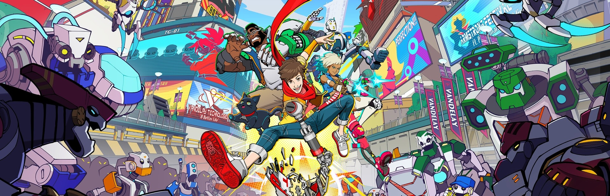

Hey Gamers! Here you will find the games that I am currently enjoying
and a list of games I've finished. Here I'll talk briefly on what I liked and disliked
about each one.

Hi-Fi Rush
Wow! This Game was AMAZING! Having an action game where everything is to the beat of
the music makes you feel so cool! With really fun writing and seamless animations from cutscenes
to gameplay, Hi-Fi Rush fires on all cylinders its entire runtime. having beaten the game I still
only feel like I've scratched the surface of the games mechanics. Ill keep this installed for a while
cleaning up a 100% here and there.
Destiny 2: Lightfall
A new year comes a new campaign, Lightfall. The annual Destiny expansion release day has
become a bit of a ritual for me and my friends. I love the hype leading up to it and the flood
of all the new content in the game all at once. Lightfall itself was to be frank, not as good
as last year. Still a great time but with a disconnected feeling and lack of impactful story
beats Lightfall, falls just a bit short of greatness.
Captain Toad: Treasure Tracker
This game is so cute guys! It took me a long time to get through this thing because there
is just so much more content than I thought there would be. the puzzle box levels where a joy to
discover how to beat and it was very satisfying to find secrets throughout.
Kirby and The Forgotten Land
This was a game I knew I would want to play, but it took it being a gift to me to actually
pop it in my switch. I'm glad I did. Kirby challenges that a game has to be hard to be fun. I
think I died like two times my whole playthrough, but I loved it. My wife loved to watch me play
just because it had such a fun and happy kind of energy to it. consider me a Kirby fan now.
Unraveled 2
Unraveled 2 was a fun ride. As a 2D platformer you inherantly have steep compitition.
Easily not my favorite game of the year I thhought the tone was unique however it lacked
a lot of depth I was hoping for. Only up from here I'm afraid.